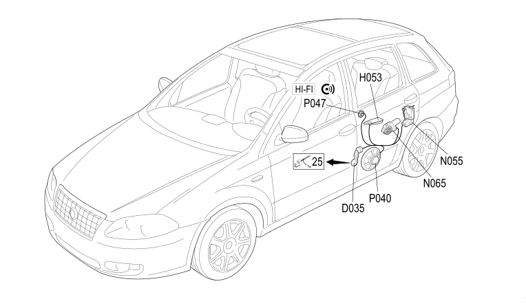

34 LEFT REAR DOOR
- Path
- Electrical equipment > 2 WIRING > 34 LEFT REAR DOOR
- Kind
- wiring harness
- Applies to
- all engines; all production periods
- Interactive page
- https://sloeber94.github.io/elrnDB-fCrm/en/#/194001823
Applies to: all engines; all production periods

Topics that link to this page (11)
- D035 LEFT REAR DOOR COUPLING (LEFT REAR DOOR)
- D035 LEFT REAR DOOR COUPLING (LEFT REAR DOOR)
- D035 LEFT REAR DOOR COUPLING (LEFT REAR DOOR)
- H053 ELECTRIC WINDOW SWITCH ON LEFT REAR DOOR (LEFT REAR DOOR)
- N055 LEFT REAR DOOR LOCK GEARED MOTOR (LEFT REAR DOOR)
- N065 LEFT REAR ELECTRIC WINDOW MOTOR (LEFT REAR DOOR)
- P040 SPEAKER IN LEFT REAR DOOR (LEFT REAR DOOR)
- P040 SPEAKER IN LEFT REAR DOOR (LEFT REAR DOOR)
- P040 SPEAKER IN LEFT REAR DOOR (LEFT REAR DOOR)
- P047 LEFT REAR TWEETER SPEAKER (LEFT REAR DOOR)
- P047 LEFT REAR TWEETER SPEAKER (LEFT REAR DOOR)